Ver. 2.0
Email: support@qdocs.net
Website: smart-school.in
We would like to thank you for purchasing Smart School Biometric Attendance App! We are very pleased you have chosen Smart School for your institution, you will not be disappointed! Before you get started, please be sure to always check out these documentation files. We outline all kinds of good information, and provide you with all the details you need to use Smart School Biometric Attendance App.
If you are unable to find your answer here in our documentation then visit our support article site smart-school.in/articles. If you are still unable to find it anywhere, then please go our Support section and open a new Support Ticket with all the details we need. Please be sure to include your site URL as well. Thank you, we hope you enjoy using Smart School Biometric Attendance App!
Help & SupportSmart School Biometric Attendance App will be install on a pc or computer which should be on same network where biometric attendance devices are connected through router. Using Smart School Biometric Attendance App, you must have running latest Smart School (version 5.2.0 or higher) on your online server with domain or subdomain or ip address. Smart School Biometric Attendance App sends attendance data to your online Smart School so before using Smart School Biometric Attendance App you must configure your Smart School for the biometric devices you will use with Smart School Biometric Attendance App.
To install Smart School Biometric Attendance App, below are the list of items you should ensure your computer hardware/software should comply with -
Smart School Biometric Attendance App can be install and configure in following 5 steps -
Smart School Biometric Attendance App supports any biometric attendance device which supports ZKTeco Firmware with Push Data (atleast Push Service Ver. 2) feature. In this documentation we have used ZKTeco K60 model device.
In your network biometric devices and computer where you will install Smart School Biometric Attendance App should be connected with your network Router through LAN wire or Wifi. The computer where you will install Smart School Biometric Attendance App must be internet ready otherwise it will not send attendance data to your Smart School even you have hosted Smart School on your local LAN network.
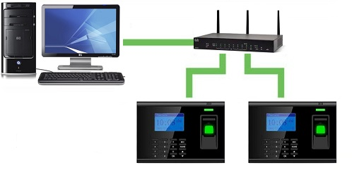
Biometric device configuration consist basically Networking Setting and Student User records entry. Student records should be mapped with Smart School student Admission Number so Smart School Biometric Attendance App can send attendance data to Smart School and mark Present attendance for that student.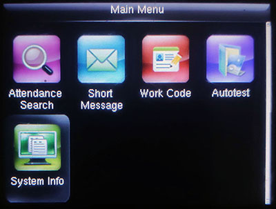
Then go to Device Info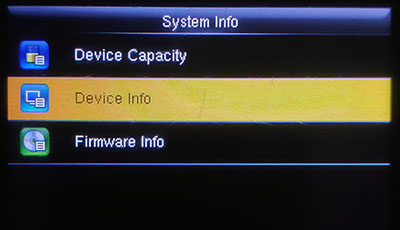
In next screen we will see various details of device. Here we will note down Serial Number of device which will be used in Step 3 and 5.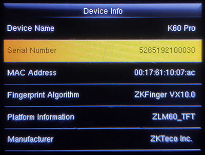
Now at Main Menu screen we will go for COMM. (Communication) area to set Ip Address and other networking details.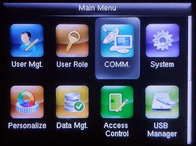
Then go to Ethernet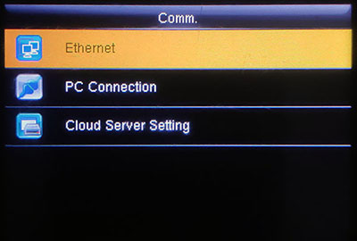
In next screen you will see IP Address, here edit it to set Ip Address for this device. Please note that this device ip address and the computer where you will install Smart School Biometric Attendance App must be in same network e.g if your router ip address is 192.168.1.1 then your computer ip address should be 192.168.1.2 and this device ip address should be 192.168.1.3, here all these 3 ip address are in same network.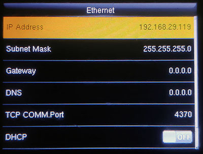
Now we will add a user (student) entry and map it to Smart School student Admission Number.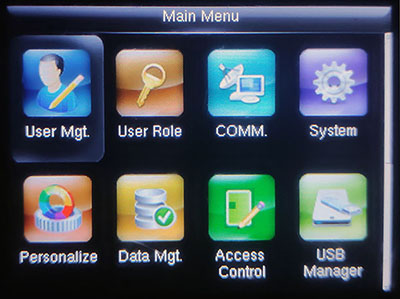
Then go to New User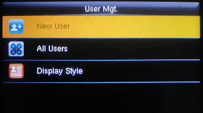
At New User screen while you are creating new user, in User Id enter student Admission Number which should be exact same as your Smart School student Admission Number.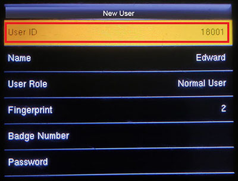
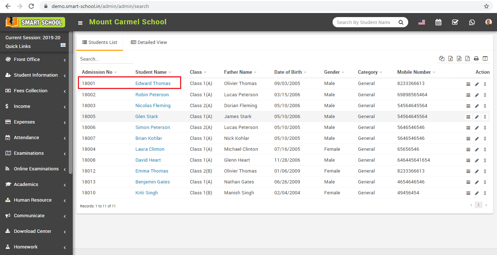
Initially your Smart School should be up and running and must be registered with your Envato Market Purchase Code. There should be some students admitted for adding attendance. If you have yet not installed Smart School then check Smart School documentation in Smart School downloaded package. Here in this documentation we assume Smart School is installed at base_url https://demo.smart-school.in/
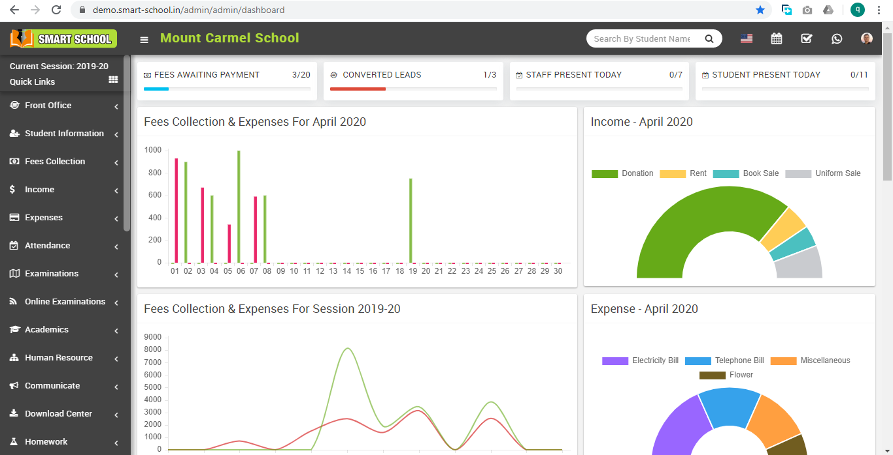
Login to you Smart School through superadmin and go to System Settings > General Setting page. Here go to Attendance Type setting. As Smart School Biometric Attendance App currently supports only Day Wise attendance so select for Day Wise attendance then select Biometric Attendance to Enable then in Devices input box enter your biometric device Serial Number. Biometric device Serial Number can be found in your device System Info area which we have already note down in Step 1 - Biometric Device Configuration. If you are using multiple devices then enter device Serial Numbers separated by comma (,) and finally Save general setting.
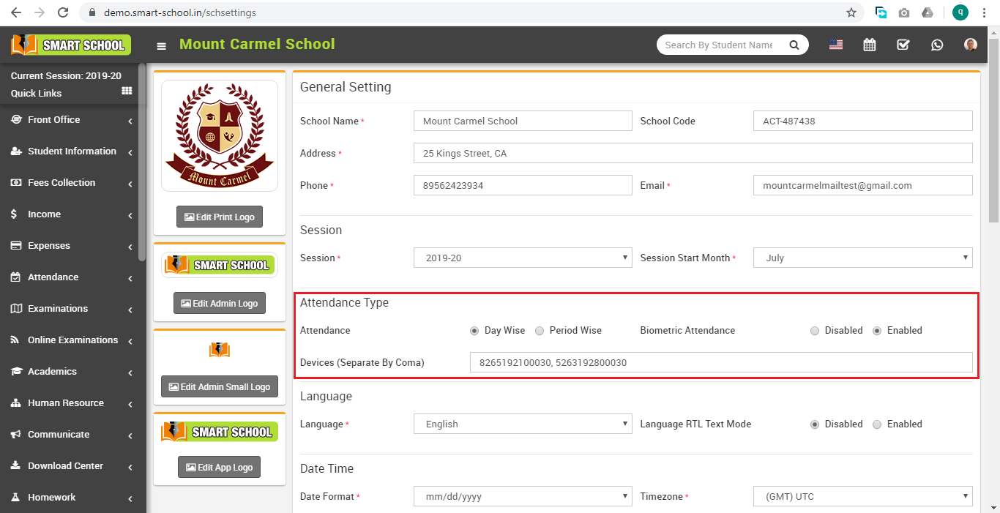
Smart School Biometric Attendance App is majorly built on Python language so to use Smart School Biometric Attendance App you first install Python.
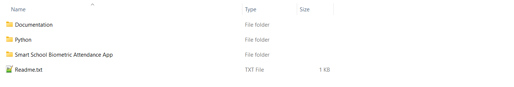
In Smart School Biometric Attendance App downloaded package go to Python folder and double click on python-3.11.0-amd64.exe file to start Python installation.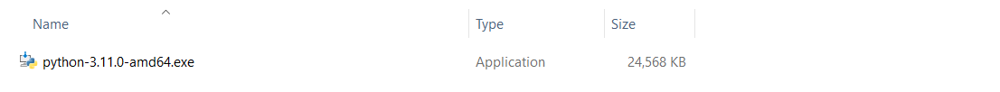
Install Python with following options -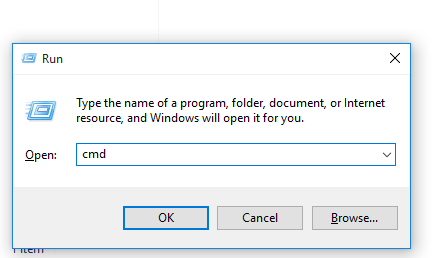
After restarting your computer first we will check for Python has been installed and configured properly. For this open Run window by using keyboard short cut Winkey + r . At Run window enter cmd then click OK button to open Windows Command Prompt.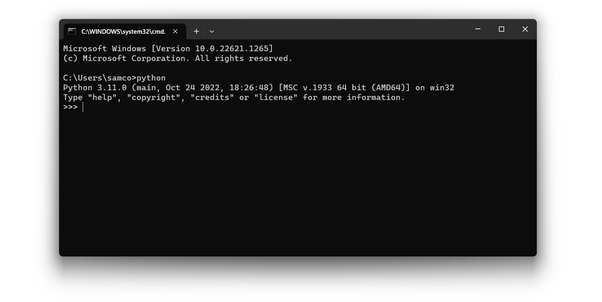
Now at Windows Command Prompt type python and hit enter, now if you can see Python current version message as mentioned in above picture that means Python has been installed and configured properly. Now type exit() and hit enter to exit Python and return back to Windows Command Prompt.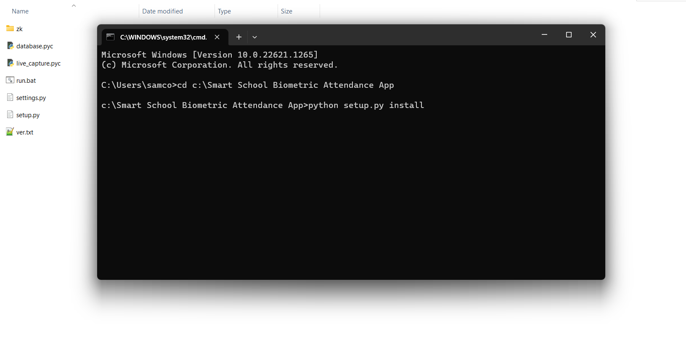
Now copy Smart School Biometric Attendance App folder from your downloaded package in your computer c drive and open this Smart School Biometric Attendance App folder here you will see setup.py file. We have to execute this setup.py file to install Smart School Biometric Attendance App dependency in computer. For this in Windows Command Prompt type cd c:\Smart School Biometric Attendance App then hit enter and then type python setup.py install and hit enter. After this Python will download Smart School Biometric Attendance App dependency and install Smart School Biometric Attendance App in your computer.Smart School Biometric Attendance App configuration is pretty simple, just we have to enter details in settings.py file.
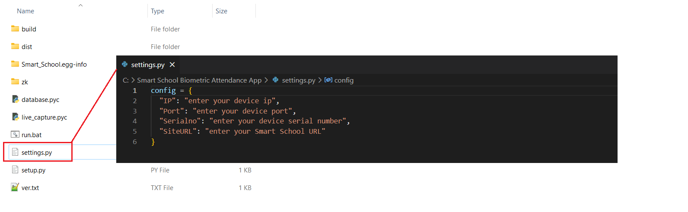
Open settings.py file in any editor and remove following text and enter details related to your Biometric Device and Smart School -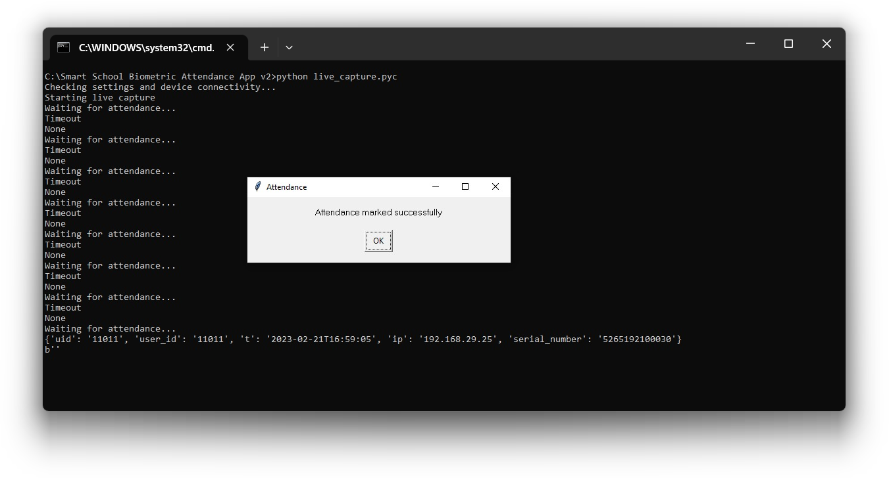
After adding details in settings.py file double click on file run.bat to start Smart School Biometric Attendance App. If everything is correct then Smart School Biometric Attendance App will start listening for biometric attendance. At this point our all setup, configuration is completed and our device has been started to take student attendance. Just add any registered student fingerprint to test and send attendance data. When Smart School Biometric Attendance App captures and send attendance data a confirmation popup window will flash. If student has punched their finger attendance multiple time frequently or in a days but still Smart School Biometric Attendance App will send only first time captured attendance data then further repeated attempts will be ignored. After taking attendance you should close Smart School Biometric Attendance App.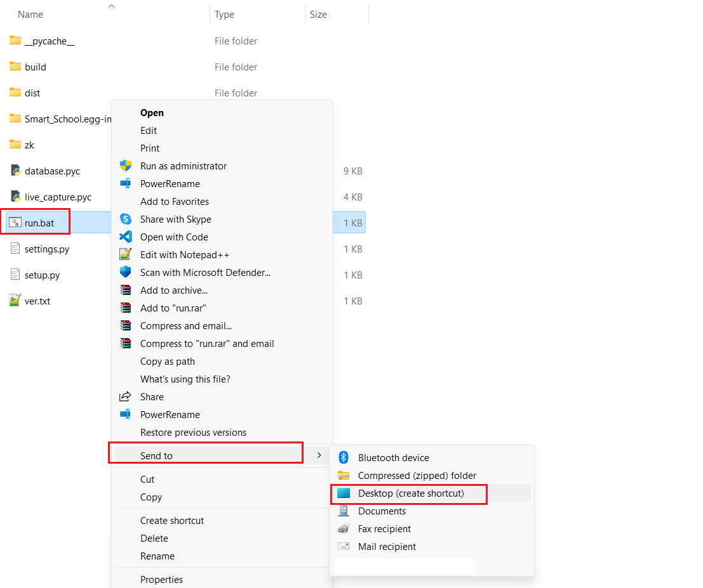
Further everyday when you want start taking biometric attendance you should double click on run.bat to start Smart School Biometric Attendance App. To avoid every time going to Smart School Biometric Attendance App folder just create a shortcut of run.bat and send it to desktop. So next time you can start Smart School Biometric Attendance App directly from desktop shortcut.If you need help for installation and configuration, do not hesitate to open Support Ticket
Released Date: 20 February, 2023
General ChangesAll of our items come with free support, and we have a Dedicated Support Ticket System to handle your requests. Support is limited to questions regarding the code features, bugs or problems with the application. We are not able to provide support for code customizations or third-party plugins. If you need help with anything other than minor customizations of your code then you should enlist the help of a developer or our customization service.
Once again, thank you to trust on Smart School Biometric Attendance App. We will be glad to help you if you have any questions relating to this application.